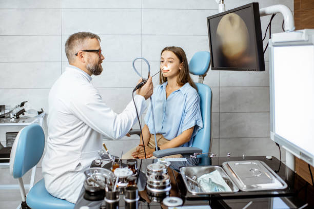

Nasal Septum Surgery
When is septal surgery needed?
When a deviated nasal septum causes persistent nasal blockage, headache, repeated sinusitis, nosebleeds or sleep apnoea.
How is a deviated septum diagnosed?
A clinical examination is usually enough, with nasal endoscopy for more detail. A CT scan of the sinuses is taken if there is sinusitis.
How is it treated?
Only when it causes significant symptoms. Treatment is surgical: septoplasty or submucous resection.
Is there a minimum age?
Submucous resection is done only after about 17 years of age. Septoplasty has no strict age limit.
Recovery
Septoplasty can be done as day-care surgery, usually without nasal packing. Avoid heavy physical strain for 2 weeks.
Book a consultation
Call 81390 05150 or message on WhatsApp. See clinics and timings.